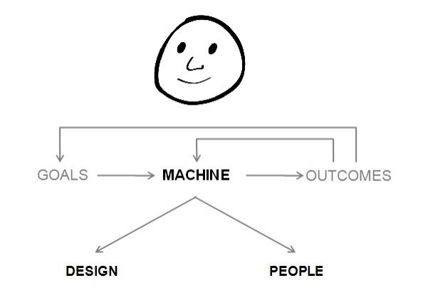
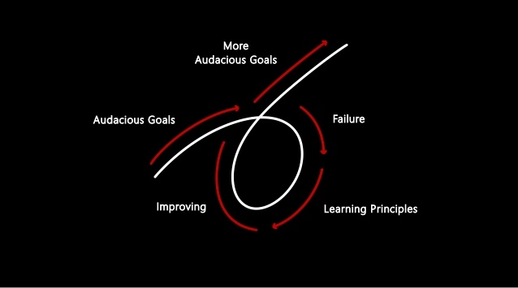

Principles By Ray Dalio: Short Summary
Last edited on: October 13, 2021 10:19 PM
In Principles, Ray Dalio lays down the rules and frameworks he uses to navigate his life. The book explores truth-seeking, decision-making, and the implementation of systems to achieve success. Afterward, Ray goes over the management principles he used to build his multibillion-dollar hedge fund, Bridgewater.
Fundamental Life Principles
Ray Dalio’s 5 guiding principles for work:
- Working for what he wanted, not for what others wanted him to do
- Coming up with the best independent opinions he could conveive
- Stress-testing his opinions by having the smartest people finding the flaws in his thinking
- Being wary about overconfidence, and good at not knowing
- Embracing reality, experiencing the results of his decisions, and reflecting on what he did to improve.
While most others seem to believe that having answers is better than having questions, I believe that having questions is better than having answers because it leads to more learning.
Embrace Reality and Deal With It
The quality of your life depends on the quality of the decisions you make.
Hyperrealism: accepting the reality as it is rather than wishing it was different. Understanding the reality allows you to learn how to work with them rather than fight with them, which leads to greater success.
Truth - more precisely, an accurate understanding of reality - is the essential foundation for producing good outcomes.
Don’t get hung up on your views about how things should be because then you’ll miss out on learning how they really are.
The Personal Evolutionary Process
Evolution, which is the natural movement towards better adaptation, is the greatest single force in the universe. Pursuing self-interest in harmony with the laws of the universe and contributing to evolution is universally rewarded.
The most important quality that differentiates successful people from unsuccessful people is our capacity to learn and adapt to things that we value.
Reality + Dreams + Determination = A Successful Life
The people who really change the world are the ones who see what’s possible and figure out how to make that happen.
Your Most Important Choices
To reach your goals faster, you need to change how you deal with these 5 types of choices:
- Embracing pain that comes with pushing your limits. It is a fundamental law of nature that to evolve one has to push one’s limits in order to gain strength. Pain + Reflection = Progress
- Accepting reality. People who know that understanding what is real is the first step toward optimally dealing with it make better decision.
- Worrying about reachings your goals rather than looking good. People who hide their weaknesses never learn how to properly deal with them and these weaknesses remain impediments in the future.
- Embracing first-order consequences, even when they are undesirable. People who overweigh the first-order consequences of their decisions and ignore the effects of second- and subsequent-order consequences rarely reach their goals.
- Taking ownership of your outcomes. Successful people understand that bad things come at everyone and that it is their responsibility to make their lives what they want them to be by successfully dealing with whatever challenges they face.
In summary, I believe that you can probably get what you want out of life if you can suspend your ego and take a no-excuse approach to achieving your goals with open-mindedness, determination, and courage, especially if you rely on the help of people who are strong in areas that you are weak.
You Two Yous and Your Machine
You do not rise to the level of your goals. You fall to the level of your systems.
Think of yourself as a machine operating within a machine and know that you have the ability to alter your machines to produce better outcomes.

To working on your machine, you need to seperate your two personalities:
- The Designer: the one who manages and plans the systems to achieve your goals
- The doer: the one who works according to the plan created ny the Designer
Your job as a Designer is to look at your resources and yourself as a Doer objectively to create the most efficient machine possible.
If you are not the best person for a job, fire yourself and find a good replacement.
5-Step Process to Get What You Want Out of Life
The process consists of five distinct steps:
- Setting clear goals. To achieve your goals you have to prioritize, and that includes rejecting good alternatives. Avoid setting goals based on what you think you can achieve.
- Identifying and not tolerating problems. Most problems are potential improvements screaming at you. Don’t confuse problems with causes.
- Diagnosing the problem’s root cause. The most important qualities for successful diagnosing problems are logic, the ability to see multiple probabilities, and the willingness to touch people’s nerves to overcome the ego barriers that stand in the way of truth.
- Designing the plan and determining the solutions. Creating a design is like writing a movie script in that you visualize who will do what through time in order to achieve the goal.
- Doing the tasks set forward in the plan. It is critical to know each day what you need to do and have the discipline to be proactive.
How often you take the cycle will dictate how fast you and your machine improves.
Values -> 1) Goals -> 2) Problems -> 3) Diagnoses -> 4) Designs -> 5) Tasks

Be radically Open Minded
Recognize your two barriers: your ego and your blind spots. Those who adapt do so by:
- Teaching their brains to work in a way that doesn’t come naturally like the creative designing an organization system.
- Using compensating mechanisms like programmed reminders.
- Relying on the help of others who are strong where they are weak.
Practice radical open-mindedness. Decision making is a two-step process: first take in all the relevant information, then decide. You’re looking for the best answer, not simply the best answer that you can come up with yourself.
Appreciate the art of thoughtful disagreement. Open-mindedness isn’t easy because of your lizard brain, so you have to practice taking feedback impersonally.
Management Principles
Get the Culture Right
Make your passion and your work one and the same and do it with people you want to be with.
- Trust in Radical Truth and Radical Transparency.
- Realize that you have nothing to fear from knowing the truth.
- Never say anything about someone that you wouldn’t say to them directly and don’t try people without accusing them to their faces.
- Cultivate Meaningful Work and Meaningful Relationships
- Create a Culture in Which It Is Okay to Make Mistakes and Unacceptable Not to Learn From Them.
- Observe the patterns of mistakes to see if they are a product of weakness.
- Get over “blame” and “credit” and get on with “accurate” and “inaccurate”.
- Write down your weaknesses and the weaknesses of others to help remember and acknowledge them.
- Be self-reflective and make sure your people are self-reflective
- Teach and reinforce the merits of mistake-based learning.
- Get and Stay in Syn.
- Constantly get in synch about what is true and what to do about it.
- Be assertive and open-minded at the same time.
- Make sure responsible parties are open-minded about the questions and comments of others
- Recognize that conflicts are essential for great relationships because they are the means by which people determine whether their principles are aligned and resolve their difference.
- Dont’t treat all opinions as equally valuable.
- Make sure people don’t confuse their right to complain, give advice, and debate with the right to make decisions.
Get the Right People
- Recognize the Most Important Decisions You Make Are Who You Choose to Be Your Responsible Party.
- Remember that almost everything good comes from having great people operating in a great culture.
- The most important responsible parties are those who are most responsible for the goals, outcomes, and machines
- Choose those who understand the difference between goals and tasks to run things
- Recognize that People Are Built Very Differently.
- Think about their very different values, abilities, and skills.
- Recognize that the type of person you fit in the job must match the requirements for that job.
- Understand that different ways of seeing things and think one way often have difficulty communicating and relating to people who see things and think another way.
- Hire Right, Because the Penalties for Hiring Wrong are Huge.
- Think though what values, abilities, and skills you are looking for.
- Weigh values and abilities more heavily than skills in deciding whom to hire.
- Write the profile of the person you are looking for into the job description.
- Look for people who have lots of great questions.
- Don’t hire people just to fit the first job they will do at your company; hire people you want to share your life with.
- Pay for the person, not for the job.
- Recognize there is a high probability that the person you hire will not be the great person you need for the job.
Build and Evolve Your Machine
- Managing as Someone Operating a Machine to Achieve a Goal.
- Understand the differences between managing, micromanaging, and not managing.
- Constantly compare your outcomes to your goals.
- Clearly assign responsibilities.
- Hold people accountable and appreciate them holding you accountable.
- Think like an owner, and expect the people you work with to do the same.
- Force yourself and the people who work for you to do difficult things.
- Communicate the plan clearly.
- Learn confidence in your people - don’t presume it.
- While logic drives our decisions, feelings are very relevant.
- Escalate when you can’t adequately handle your responsibilities, and make sure that people who work for you do the same.
- Probe Deep and Hard to Learn What to Expect from Your “Machine”.
- Know what your people are like, and make sure they do their jobs excellently.
- Constantly probe the people who report to you, and encourage them to probe you.
- Probe to the level below the people who work for you.
- Don’t “pick your battles.” Fight them all
- Don’t let people off the hook
- Don’t assume that people’s answers are correct
- Make the probing transparent rather than private
- Evaluate People Accurately, Not “Kindly”.
- Evaluate employees with the same rigor as you evaluate job candidates
- Know what makes your people tick, because people are your most important resource
- Recognize that while most people prefer compliments over criticisms, there is nothing more valuable than accurate criticisms
- Understand that you and the people you manage will go through a process of personal evolution
- Help people through the pain that comes with exploring their weaknesses
- Remember that you don’t need to get to the point of “beyond a shadow of a doubt” when judging people
- Train and Test People Through Experiences.
- Provide constant feedback to put the learning in perspective
- Remember that everything is a case study
- Know what types of mistakes are acceptable and unacceptable, and don’t allow the people who work for you to make the unacceptable ones
- When you find that someone is not a good “click” for a job, get them out of it ASAP
- Know that it is much worse to keep someone in a job who is not suited for it than it is to fire someone
- Do not lower the bar
Perceive, Diagnose, and Solve Problems
- Know How to Perceive Problems Effectively.
- Have as many eyes looking for problems as possible
- Don’t use the anonymous “we” and “they,” because that masks personal responsibility—use specific names
- Be very specific about problems; don’t start with generalizations
- Use the following tools to catch problems: issues logs, metrics, surveys, checklists, outside consultants, and internal auditors
- The most common reason problems aren’t perceived is what I call the “frog in the boiling water” problem
- Diagnose to Understand What the Problems Are Symptomatic Of.
- Recognize that all problems are just manifestations of their root causes, so diagnose to understand what the problems are symptomatic of
- Ask the following questions when diagnosing
- To distinguish between a capacity issue and a capability issue, imagine how the person would perform at that particular function if they had ample capacity.
- Keep in mind that diagnoses should produce outcomes
- Design Your Machine to Achieve Your Goals.
- Don’t act before thinking. Take the time to come up with a game plan
- Recognize that design is an iterative process; between a bad “now” and a good “then” is a “working through it” period
- Most importantly, build the organization around goals rather than tasks
- Everyone must be overseen by a believable person who has high standards
- Do not build the organization to fit the people
- Have the clearest possible delineation of responsibilities and reporting lines
- Assign responsibilities based on workflow design and people’s abilities, not job titles
- Think clearly how things should go, and when they aren’t going that way, acknowledge it and investigate
- Recognize the Power of Knowing How to Deal with Not Knowing.
- Finding the path to success is at least as dependent on coming up with the right questions as coming up with answers.
- Remember that your goal is to find the best answer, not to give the best one you have.
- Remember the 80/20 Rule, and Know What the Key 20% Is.
- Don’t mistake small things for unimportant things, because some small things can be very important
- Make sure all the “must do’s” are above the bar before you do anything else
- The best choices are the ones with more pros than cons, not those that don’t have any cons
All articles in this blog are used except for special statements CC BY-SA 4.0 reprint policy. If reproduced, please indicate source Ziyi Zhu!